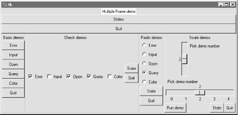
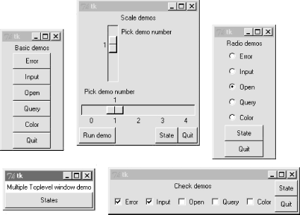
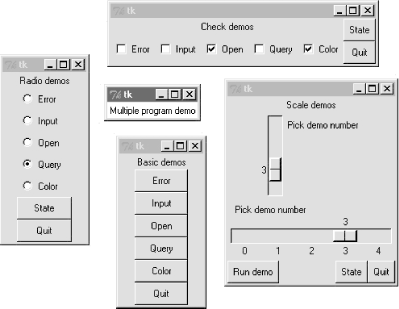
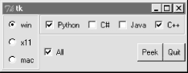

| I l@ve RuBoard |
|
7.8 Running GUI Code Three WaysNow that we've built a handful of similar demo launcher programs, let's write a few top-level scripts to combine them. Because the demos were coded as both reusable classes and scripts, they can be deployed as attached frame components, run in their own top-level windows, and launched as standalone programs. All three options illustrate code reuse in action. 7.8.1 Attaching FramesTo illustrate hierarchical GUI composition on a grander scale than we've seen so far, Example 7-32 arranges to show all four of the dialog launcher bar scripts of this chapter in a single frame. It reuses Example 7-9, Example 7-22, Example 7-25, and Example 7-30. Example 7-32. PP2E\Gui\Tour\demoAll-frm.py#####################################################
# 4 demo class components (subframes) on one window;
# there are 5 Quitter buttons on this one window too;
# guis can be reused as frames, windows, processes;
#####################################################
from Tkinter import *
from quitter import Quitter
demoModules = ['demoDlg', 'demoCheck', 'demoRadio', 'demoScale']
parts = []
def addComponents(root):
for demo in demoModules:
module = __import__(demo) # import by name string
part = module.Demo(root) # attach an instance
part.config(bd=2, relief=GROOVE)
part.pack(side=LEFT, fill=BOTH)
parts.append(part) # change list in-place
def dumpState():
for part in parts: # run demo report if any
print part.__module__ + ':',
if hasattr(part, 'report'):
part.report()
else:
print 'none'
root = Tk() # default toplevel window
Label(root, text='Multiple Frame demo', bg='white').pack()
Button(root, text='States', command=dumpState).pack(fill=X)
Quitter(root).pack(expand=YES, fill=X)
addComponents(root)
mainloop()
Because all four demo launcher bars are coded to attach themselves to parent container widgets, this is easier than you might think: simply pass the same parent widget (here, the root window) to all four demo constructor calls, and pack and configure the demo objects as desired. Figure 7-32 shows this script's graphical result -- a single window embedding instances of all four of the dialog demo launcher demos we saw earlier. Figure 7-32. demoAll_frm: nested subframesNaturally, this example is artificial, but it illustrates the power of composition when applied to building larger GUI displays. If you pretend that each of the four attached demo objects was something more useful, like a text editor, calculator, or clock, you'll better appreciate the point of this example. Besides demo object frames, this composite window also contains no less than five instances of the Quitter button we wrote earlier (any one of which can end the GUI), and a States button to dump the current values of all the embedded demo objects at once (it calls each object's report method, if it has one). Here is a sample of the sort of output that shows up in the stdout stream after interacting with widgets on this display; States output is in bold: C:\...\PP2E\Gui\Tour>python demoAll_frm.py in onMove 0 in onMove 0 demoDlg: none demoCheck: 0 0 0 0 0 demoRadio: demoScale: 0 you pressed Input result: 1.234 demoDlg: none demoCheck: 1 0 1 1 0 demoRadio: Input demoScale: 0 you pressed Query result: yes in onMove 1 in onMove 2 You picked 2 C:/PP2ndEd/examples/PP2E/Gui/Tour/demoAll_frm.py demoDlg: none demoCheck: 1 0 1 1 0 demoRadio: Query demoScale: 2 The only substantially tricky part of this script is its use of Python's built-in __import__ function to import a module by a name string. Look at the following two lines from the script's addComponents function: module = __import__(demo) # import module by name string part = module.Demo(root) # attach an instance of its Demo This is equivalent to saying something like this: import 'demoDlg' part = 'demoDlg'.Demo(root) except that this is not legal Python syntax -- the module name in import statements must be a Python variable, not a string. To be generic, addComponents steps through a list of name strings, and relies on __import__ to import and return the module identified by each string. It's as though all of these statements were run: import demoDlg, demoRadio, demoCheck, demoScale part = demoDlg.Demo(root) part = demoRadio.Demo(root) part = demoCheck.Demo(root) part = demoScale.Demo(root) But because the script uses a list of name strings, it's easier to change the set of demos embedded -- simply change the list, not lines of executable code. Moreover, such data-driven code tends to be more compact, less redundant, and easier to debug and maintain. Incidentally, modules can also be imported from name strings by dynamically constructing and running import statements like this: for demo in demoModules:
exec 'from %s import Demo' % demo # make and run a from
part = Demo(root) # or eval('Demo')(window)
The exec statement compiles and runs a Python statement string (here, a from to load a module's Demo class); it works here as if the statement string were pasted into the source code where the exec statement appears. Because it supports any sort of Python statement, this technique is more general than the __import__ call, but, it can also be slower, since it must parse code strings before running them.[2] But that slowness may not matter in a GUI; users tend to be slower than parsers.
As we saw in Chapter 6, attaching nested frames like this is really just one way to reuse GUI code structured as classes. It's just as easy to customize such interfaces by subclassing, rather than embedding. Here, though, we're more interested in deploying an existing widget package, rather than changing it; the next two sections show two other ways to present such packages to users. 7.8.2 Independent WindowsOnce you have a set of component classes, any parent will work -- both frames, and brand new top-level windows. Example 7-33 attaches instances of all four demo bar objects to their own Toplevel windows, not the same Frame. Example 7-33. PP2E\Gui\Tour\demoAll-win.py####################################################
# 4 demo classes in independent top-level windows;
# not processes: when one is quit all others go away
# because all windows run in the same process here
####################################################
from Tkinter import *
demoModules = ['demoDlg', 'demoRadio', 'demoCheck', 'demoScale']
demoObjects = []
for demo in demoModules:
module = __import__(demo) # import by name string
window = Toplevel() # make a new window
demo = module.Demo(window) # parent is the new window
demoObjects.append(demo)
def allstates():
for obj in demoObjects:
if hasattr(obj, 'report'):
print obj.__module__,
obj.report()
Label(text='Multiple Toplevel window demo', bg='white').pack()
Button(text='States', command=allstates).pack(fill=X)
mainloop()
We met the Toplevel class earlier; every instance generates a new window on your screen. The net result is captured in Figure 7-33 -- each demo runs in an independent window of its own, instead of being packed together in a single display. Figure 7-33. demoAll_win: new Toplevel windowsThe main root window of this program appears in the lower left of this screen shot; it provides a States button that runs the report method of each of the demo objects, producing this sort of stdout text: C:\...\PP2E\Gui\Tour>python demoAll_win.py in onMove 0 in onMove 0 in onMove 1 you pressed Open result: C:/PP2ndEd/examples/PP2E/Gui/Tour/demoAll_win.txt demoRadio Open demoCheck 1 1 0 0 0 demoScale 1 7.8.3 Running ProgramsFinally, as we learned earlier in this chapter, Toplevel windows function independently, but they are not really independent programs. Quitting any of the windows created by Example 7-33 quits them all, because all run in the same program process. That's okay in some applications, but not all. To go truly independent, Example 7-34 spawns each of the four demo launchers as independent programs, using the launchmodes module we wrote at the end of Chapter 3. This only works because the demos were written as both importable classes and runnable scripts -- launching them here makes all their names __main__ when run. Example 7-34. PP2E\Gui\Tour\demoAll-prg.py#######################################################
# 4 demo classes run as independent program processes;
# if one window is quit now, the others will live on;
# there is no simple way to run all report calls here,
# and some launch schemes drop child program stdout;
#######################################################
from Tkinter import *
demoModules = ['demoDlg', 'demoRadio', 'demoCheck', 'demoScale']
from PP2E.launchmodes import PortableLauncher
for demo in demoModules: # see Parallel System Tools
PortableLauncher(demo, demo+'.py')() # start as top-level programs
Label(text='Multiple program demo', bg='white').pack()
mainloop()
As Figure 7-34 shows, the display generated by this script is similar to the prior one -- all four demos come up in windows of their own. This time, though, these are really independent programs: if any one of the five windows here is quit, the others live on. Figure 7-34. demoAll_prg: independent programs7.8.3.1 Cross-program communicationSpawning GUIs as programs is the ultimate in code independence, but makes the lines of communication between components more complex. For instance, because the demos run as programs here, there is no easy way to run all their report methods from the launching script's window pictured in the middle of Figure 7-34. In fact, the States button is gone this time, and we only get PortableLauncher messages in stdout as the demos start up: C:\...\PP2E\Gui\Tour>python demoAll_prg.py demoDlg demoRadio demoCheck demoScale On some platforms, messages printed by the demo programs (including their own State buttons) may show up the original console window where this script is launched; on Windows, the os.spawnv call used to start programs in launchmodes completely disconnects the child program's stdout stream from its parent. Regardless, there is no way to call all demos' report methods at once -- they are spawned programs in distinct address spaces, not imported modules. Of course, we could trigger report methods in the spawned programs with some of the IPC mechanisms we met in Chapter 3. For instance:
Given their event-driven nature, GUI-based programs may need to be augmented with threads or timer-event callbacks to periodically check for such incoming messages on pipes, fifos, or sockets (e.g., see the after method call described near the end of the next chapter). But since this is all well beyond the scope of these simple demo programs, I'll leave such cross-program extensions up to more parallel-minded readers. 7.8.3.2 Coding for reusabilityA postscript: I coded all the demo launcher bars deployed by the last three examples to demonstrate all the different ways that their widgets can be used. They were not developed with general-purpose reusability in mind; in fact, they're not really useful outside the context of introducing widgets in this book. That was by design; most Tkinter widgets are easy to use once you learn their interfaces, and Tkinter already provides lots of configuration flexibility by itself. But if I had in mind to code checkboxes and radiobutton classes to be reused as general library components, they would have to be structured differently:
Example 7-35 shows one way to code check and radiobutton bars as library components. It encapsulates the notion of associating Tkinter variables, and imposes a common usage mode on callers to keep the interface simple -- state fetches, instead of press callbacks. Example 7-35. PP2E\Gui\Tour\buttonbars.py# check and radio button bar classes for apps that fetch state later;
# pass a list of options, call state(), variable details automated
from Tkinter import *
class Checkbar(Frame):
def __init__(self, parent=None, picks=[], side=LEFT, anchor=W):
Frame.__init__(self, parent)
self.vars = []
for pick in picks:
var = IntVar()
chk = Checkbutton(self, text=pick, variable=var)
chk.pack(side=side, anchor=anchor, expand=YES)
self.vars.append(var)
def state(self):
return map((lambda var: var.get()), self.vars)
class Radiobar(Frame):
def __init__(self, parent=None, picks=[], side=LEFT, anchor=W):
Frame.__init__(self, parent)
self.var = StringVar()
for pick in picks:
rad = Radiobutton(self, text=pick, value=pick, variable=self.var)
rad.pack(side=side, anchor=anchor, expand=YES)
def state(self):
return self.var.get()
if __name__ == '__main__':
root = Tk()
lng = Checkbar(root, ['Python', 'C#', 'Java', 'C++'])
gui = Radiobar(root, ['win', 'x11', 'mac'], side=TOP, anchor=NW)
tgl = Checkbar(root, ['All'])
gui.pack(side=LEFT, fill=Y)
lng.pack(side=TOP, fill=X)
tgl.pack(side=LEFT)
lng.config(relief=GROOVE, bd=2)
gui.config(relief=RIDGE, bd=2)
from quitter import Quitter
def allstates(): print gui.state(), lng.state(), tgl.state()
Quitter(root).pack(side=RIGHT)
Button(root, text='Peek', command=allstates).pack(side=RIGHT)
root.mainloop()
To reuse these classes in your scripts, import and call with a list of the options you want to appear in a bar of checkboxes or radiobuttons. This module's self-test code at the bottom of the file gives further usage details. It generates Figure 7-35 when this file is run as a program instead of imported -- a top-level window that embeds two Checkbars, one Radiobar, a Quitter button to exit, and a Peek button to show bar states. Figure 7-35. buttonbars self-test windowHere's the stdout text you get after pressing Peek -- the results of these classes' state methods: x11 [1, 0, 1, 1] [0] win [1, 0, 0, 1] [1] The two classes in this module demonstrate how easy it is to wrap Tkinter interfaces to make them easier to use -- they completely abstract away many of the tricky parts of radiobutton and checkbox bars. For instance, you can forget about linked variable details completely if you use such higher-level classes instead; simply make objects with option lists and call their state methods later. If you follow this path to its conclusion, you might just wind up with a higher-level widget library on the order of the PMW package mentioned in Chapter 6. On the other hand, these classes are still not universally applicable; if you need to run actions when these buttons are pressed, for instance, you'll need to use other high-level interfaces. Luckily, Python/Tkinter already provides plenty. Later in this book, we'll again use the widget combination and reuse techniques introduced in this section to construct larger GUIs. For now, this first widget tour chapter is about to make one last stop -- the photo shop. |
| I l@ve RuBoard |
|